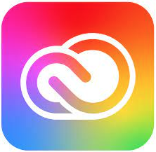
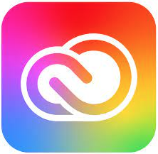

📍 Université de Corte –
Parcours Création Numérique
Formation polyvalente en webdesign, design graphique, création de contenu, UX/UI et
gestion de projet digital.
Stage de deux mois aux seins de l'agence Studio 42°9.
📍 Faculté de Corte –
Candidate libre dans le cadre d’un double cursus
Approfondissement des sciences de l’information et de la communication : sémiotique,
médias, stratégies numériques et culture visuelle.
📍Lycée Paul (Montesoro) –
Avec mention – Option Arts plastiques
Approche technique du design et de l’espace, combinée à une sensibilité artistique.
📍 Collège Campo Vallone –
Biguglia
Obtenu avec Mention Bien

Un avant-goût de mon univers
Une sélection de qui reflètent mon style, mes compétences et mon envie de créer avec sens. Graphisme, web, communication : laissez-vous guider dans un univers à mon image.


Un aperçu ne suffit pas ? Laissez-vous inspirer par l’ensemble de mes créations.
Ils m'ont accompagnée
« Célia est une personne sérieuse, réactive et dotée d’une belle sensibilité graphique. Elle sait s’adapter à tout type de demande. »
— Julie, Community Manager Freelance
« Une étudiante très investie, avec une vraie envie d’apprendre et de proposer des choses nouvelles. »
— Laurent C., Enseignant BUT MMI
« Très professionnelle, impliquée et autonome. Une vraie force créative ! »
— Anaïs, Fondatrice institut beauté
Les outils qui m’accompagnent chaque jour


 
